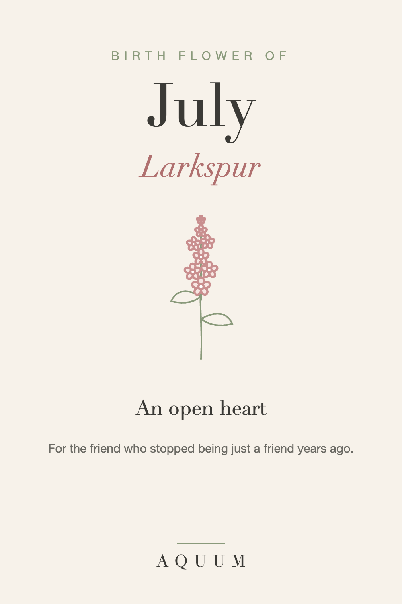

July Birth Flower: Larkspur Meaning and Gift Ideas
2026-09-30
This article may contain affiliate links. How that works.

July's birth flowers are the larkspur and the water lily. Larkspur grows in tall spikes of blue, purple, pink or white, a summer flower through and through.
What larkspur means
Larkspur stands for an open heart and a strong bond, along with lightness and a sense of fun. Its name comes from the shape of its flowers, which look like a lark's claw.
The water lily, July's second flower
The water lily means purity and rebirth. It opens in the morning and closes at night, rising clean from muddy water, which has made it a symbol of renewal in many cultures.
A safety note
Larkspur is toxic to people, pets and livestock if eaten. It's safe to admire and to have as cut flowers out of reach, but not a plant for a home with curious pets or small children. A larkspur design is the worry-free version.
Who the larkspur suits
- A best friend born in July
- Sisters, and friends who feel like sisters
- Anyone with an easy, open-hearted way of being in the world
July birth flower gift ideas
- A larkspur shirt, mug or tote, for the friend you'd call first.
- A water lily print or keepsake for someone starting a new chapter.
- A card with larkspur's meaning: "an open heart" is a good thing to tell a friend they have.